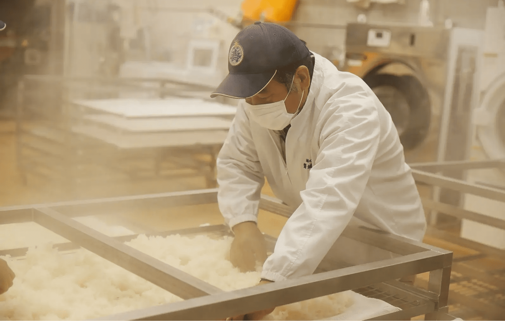

集って遊んで農業再生
震災から復活までのストーリーを知り、自分のふるさとについて考えるきっかけになります。
浪江の地で約2世紀にわたり代々酒造りを行い、地元の人々に愛されてきた家族経営の酒蔵、鈴木酒造店。さまざまな奮闘の末、10年ぶりに同地での操業を再開しました。福島県人の底力の発揮です。
鈴木酒造店
避難先の山形から始まる酒蔵の復活劇
浪江町の海岸沿いで漁師たちに愛されてきた鈴木酒造店は、2011年3月11日の津波で完全に流されてしまい、専務の鈴木荘司さんは、山形県で避難生活を送っていました。 ところがそんなある日、山形で廃業間近の酒蔵の情報を入手。すぐに酒蔵を引き継ぎます。ここからが復活劇の始まり。自分たちの酒蔵が破壊されたわずか9か月後の12月に最初の酒を出荷したのです。現在では、この蔵で主力商品である「磐城 壽」を年間40万リットル生産しています 望むのはもちろん福島の元の蔵での酒造りでしたが、土地を含めた設備の不足が鈴木酒造店の復活を阻んでいました。しかしそんな時、「道の駅なみえ」のすぐ隣の敷地で酒を製造・販売しないか…と行政から声がかかります。 2021年3月に醸造所と店舗がオープン。震災から10年後のことでした。
コシヒカリを蒸してうま味が豊富な酒に仕上げる
復活した酒造で新たなチャレンジ
現在「道の駅なみえ」内の施設「なみえの技・なりわい館」にある鈴木酒造店では、年間4万リットルを生産し、鈴木荘司さんと社長である鈴木さんの兄が山形と福島を往復し、それぞれ週の半分ずつ浪江町での操業を監督しています。地元の伝統的な酒をもう一度飲みたいと店を訪れる住民は後を絶ちません。5種類の酒が楽しめる500円の利き酒セットがあり、お酒が飲めない人には日本酒風味のアイスクリームも用意されています。マラソンを趣味とする若い蔵人のアイデアによる疲労回復に役立つクエン酸を使った酒など、今後予定されている展開が楽しみです。
鈴木 荘司 鈴木酒造店専務
浪江は私たちのふるさとです。この土地の食べ物、空気、水があってこその私たちなのです。この町は少しずつ回復しつつあります。漁業が再開され、自治体も復活しました。昔の人口までには及びませんが、人も少しずつ戻り始めました。幸いなことに、道の駅内にある鈴木酒造店は、震災復興に取り組む人たちや、観光客にも好評です。被害状況だけでなく、福島がどのように発展しているのか、その現実を皆さん自身の目で見てもらいたいと思います。